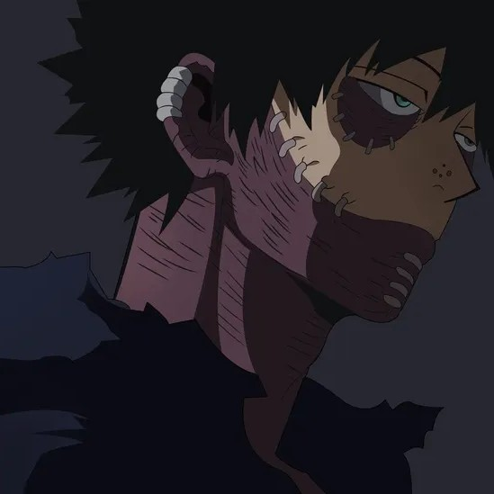

Nuestra Historia
AnimeStart nació de una idea sencilla: crear un lugar donde los amantes del anime pudieran reunirse para compartir recomendaciones, opiniones y experiencias sobre sus series favoritas.
Todo comenzó cuando un grupo de amigos coincidió en su pasión por las historias que transmiten emoción, aventura y enseñanzas a través del anime. Durante años intercambiamos recomendaciones, debatimos teorías, descubrimos nuevos personajes y compartimos momentos inolvidables gracias a este universo tan diverso.
Con el tiempo nos dimos cuenta de que muchas personas buscaban un sitio donde encontrar información clara sobre animes, curiosidades, noticias y recomendaciones para empezar nuevas series. Así nació AnimeStart, un proyecto creado con entusiasmo para conectar a fanáticos de todas las edades y niveles de experiencia.
Hoy seguimos creciendo con la misma motivación del primer día: compartir nuestra pasión por el anime y ayudar a que más personas descubran este increíble mundo lleno de imaginación y creatividad.
Misión
Brindar contenido entretenido, informativo y accesible sobre el anime, creando una comunidad donde los fanáticos puedan aprender, compartir y descubrir nuevas historias que inspiren y entretengan.
Visión
Convertirnos en una de las comunidades de anime más reconocidas por su creatividad, respeto y pasión, siendo un punto de encuentro para quienes desean explorar este fascinante universo.
¿Por qué AnimeStart?
Porque creemos que cada anime tiene una historia capaz de inspirar, emocionar o enseñar algo nuevo. Nuestro objetivo es facilitar el acceso a recomendaciones, noticias y contenido interesante para que cada visita sea una nueva aventura.
AnimeStart no es solo una página web; es una comunidad donde los fanáticos pueden sentirse identificados, compartir sus gustos y descubrir nuevas experiencias dentro del mundo del anime.
Nuestros Valores
- Pasión: Amamos el anime y disfrutamos compartirlo.
- Respeto: Valoramos todas las opiniones y gustos.
- Creatividad: Buscamos nuevas formas de conectar con la comunidad.
- Compañerismo: Fomentamos la amistad entre fanáticos.
- Inclusión: Todos son bienvenidos en AnimeStart.
- Aprendizaje: Siempre hay algo nuevo por descubrir.
Nuestro Equipo

Yenny Alexandra Castro
Desarrolladora Web

Daniel Steven Casas
Desarrollador Web

Luis Guillermo Imbachi
Desarrollador Web

Manuel F. Caballero
Desarrollador Web
Danna Valentina Lopez
Desarrolladora Web
Laura Valentina Romero
Desarrolladora Web

Jonathan Arevalo
Desarrollador Web